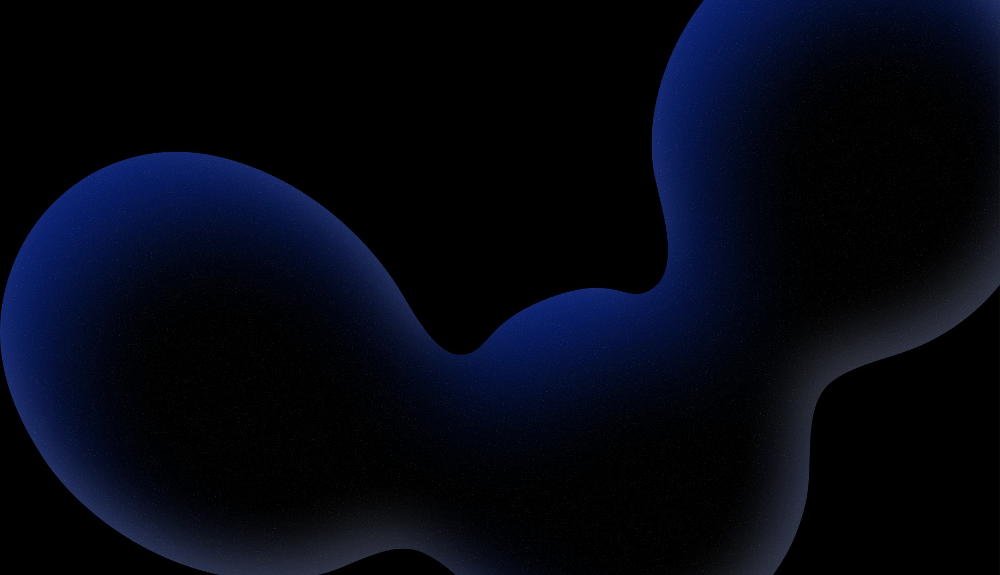

Cours · Entrepreneuriat
Louis Montagne, fondateur d’Orem
Du problème observé à l’opportunité
Déceler les opportunités entrepreneuriales
Apprendre à observer, comprendre et transformer un problème en opportunité.
Problématique
Comment passer d’un problème observé à une opportunité entrepreneuriale ?
L’objectif n’est pas de trouver « une bonne idée ».
L’objectif est d’apprendre à observer, comprendre et transformer un problème en opportunité.
Le déroulé du cours
Cinq parties, un fil conducteur
01
Comprendre
Idée, problème et opportunité : poser les bonnes distinctions.
02
Cibler
Segmenter, définir l’ICP et le persona, formuler la valeur.
03
Repérer
Où se cachent les opportunités, et pourquoi la concurrence n’est pas un frein.
04
Formuler
Proposition de valeur, offre et test ultime.
05
Pratiquer
L’exercice du chasseur d’opportunités, jusqu’au pitch.

Partie 01
Comprendre ce qu’est une opportunité
1 · Une distinction fondamentale
Une opportunité, ce n’est pas une idée
« Je vais créer une application pour aider les étudiants à s’organiser. »
« Les étudiants utilisent plusieurs outils pour gérer leurs cours, devoirs et échéances, mais aucun ne leur permet de savoir rapidement ce qu’ils doivent réellement faire aujourd’hui. »
La deuxième formulation est beaucoup plus intéressante, parce qu’elle part d’une situation réelle.
À retenir
L’entrepreneur ne cherche pas d’abord une idée. Il cherche un problème qui mérite d’être résolu.
2 · Problème ≠ opportunité
Un problème peut être réel sans constituer une bonne opportunité
Une opportunité apparaît lorsqu’on trouve toute la chaîne :
01
Problème
02
Cible concernée
03
Besoin
04
Solution
05
Valeur créée
06
Volonté de payer
Définition simple
Une opportunité entrepreneuriale est un problème suffisamment important, pour une cible suffisamment identifiable, pour lequel une solution peut créer de la valeur.
Le détecteur d’opportunités
3 · Les 7 questions réflexes
1
Qui rencontre le problème ?
Pas « tout le monde ». Qui précisément ?
2
À quelle fréquence ?
Une fois par an ou tous les jours ?
3
Quelle est son intensité ?
Irritant ? Frustrant ? Bloquant ? Coûteux ?
4
Que fait actuellement la personne ?
Une question extrêmement importante.
5
Combien lui coûte ce problème ?
Argent, temps, énergie, stress, opportunités perdues.
6
Pourquoi les solutions actuelles ne suffisent-elles pas ?
C’est souvent ici que se cache l’opportunité.
7
Quelqu’un paierait-il pour une meilleure solution ?
Le test final de la valeur.
Sept questions à poser devant chaque problème observé.
Zoom sur les questions 4 et 5
Suivez le temps et l’argent déjà dépensés
Le signal
Si quelqu’un dépense déjà du temps ou de l’argent pour résoudre son problème, c’est un signal.
4
Que fait actuellement la personne ?
Utilise-t-elle :
- Excel ?
- WhatsApp ?
- un concurrent ?
- plusieurs outils ?
- une solution bricolée ?
- quelqu’un qu’elle paie ?
5
Combien lui coûte ce problème ?
En :
- argent
- temps
- énergie
- stress
- opportunités perdues
Le triangle de l’opportunité
4 · Trois questions à valider
01
Désirabilité
Les gens en veulent-ils ?
02
Faisabilité
Peut-on réellement la produire ?
03
Viabilité
Peut-on gagner de l’argent avec ?
Désirable + faisable + viable = opportunité potentielle
Partie 02
Cibler la bonne personne
5 · Trouver la bonne cible
« Notre cible, ce sont les entreprises » : trop large
On apprend à segmenter. Exemple avec le marché de la restauration :
Marché : restauration
Restaurants indépendants
2 à 5 établissements
On commence à avoir une cible exploitable.
ICP ≠ persona
6 · Deux outils, deux questions
ICP · Ideal Customer Profile
Le type de client pour lequel notre solution possède le plus de valeur.
PME françaises de 10 à 50 salariés, en croissance, réalisant plus d’1 M€ de CA, dont le site génère peu de demandes commerciales.
Il répond à
Qui voulons-nous cibler ?
Persona
La personne à laquelle on s’adresse. Exemple : Thomas, 38 ans, dirigeant.
· 25 salariés, 3 M€ de CA
· dépend du bouche-à-oreille
· manque de temps
· trouve son site vieillissant
· a déjà payé une agence
· veut plus de demandes entrantes
· craint de payer pour « un site joli mais inutile »
Il sert à comprendre
Qui avons-nous réellement en face de nous ?
Un bon persona n’est pas une fiche Tinder
7 · On ne cherche pas à savoir s’il aime le café ou le tennis
01
Objectifs
Que veut-il obtenir ?
02
Problèmes
Qu’est-ce qui l’empêche de l’obtenir ?
03
Frustrations
Qu’est-ce qui l’énerve aujourd’hui ?
04
Motivations
Pourquoi agirait-il maintenant ?
05
Objections
Pourquoi pourrait-il refuser ?
06
Critères de décision
Pourquoi choisirait-il cette solution plutôt qu’une autre ?
8 · Une même situation, quatre niveaux
Besoin, douleur, désir, résultat
01
Besoin
« J’ai besoin de trouver des clients. »
02
Douleur
« Mon entreprise dépend presque entièrement du bouche-à-oreille. »
03
Désir
« Je veux recevoir régulièrement des demandes qualifiées. »
04
Résultat
« Générer 10 demandes qualifiées par mois. »
Plus on se rapproche du résultat, plus la valeur devient concrète.
9 · L’exercice à garder absolument
Fonctionnalité, bénéfice, résultat
Fonctionnalité
Bénéfice
Résultat
Aspirateur robot
Il se programme automatiquement.
Il nettoie sans que vous ayez besoin de vous en occuper.
Vous rentrez dans un logement propre sans avoir consacré votre temps au ménage.
Agence
Un dashboard avec 12 indicateurs.
Vous centralisez vos données.
Vous savez immédiatement où concentrer vos efforts commerciaux.
À retenir
Le client n’achète pas une fonctionnalité. Il achète ce que cette fonctionnalité lui permet d’obtenir.
10 · Jobs to Be Done
On n’achète pas un produit, on « embauche » une solution
Donc
On ne vend pas uniquement un produit. On vend un progrès.
Un étudiant
n’achète pas forcément une application de productivité. Il veut :
arrêter d’oublier ses devoirs et savoir quoi faire chaque jour.
Une entreprise
n’achète pas forcément un site internet. Elle veut :
transformer davantage de visiteurs en opportunités commerciales.
Partie 03
Repérer les opportunités
11 · Où trouver les opportunités ?
« Qu’est-ce que les gens font aujourd’hui alors qu’ils détestent le faire ? »
Autre signal très fort : le bricolage
Quand quelqu’un empile ces outils pour résoudre un seul problème, l’offre existante ne répond probablement pas correctement au besoin.
Les 4 grandes sources d’opportunités
12 · D’où viennent-elles ?
1
Un problème existant
Quelque chose fonctionne mal.
2
Une évolution
Technologie, réglementation, société, habitudes. Ce qui était impossible hier devient possible aujourd’hui.
3
Une inefficacité
Une tâche prend trop de temps ou coûte trop cher.
4
Une nouvelle attente
Les comportements évoluent, mais l’offre ne suit pas.
13 · La concurrence n’est pas forcément un problème
« Ça existe déjà, donc ce n’est pas une opportunité. »
La vraie question : qu’est-ce qui reste mal résolu ?
L’opportunité peut être dans la différence, pas dans l’invention.
Une entreprise n’a pas besoin d’inventer un marché. Elle peut :
- mieux servir une cible
- résoudre un problème précis
- être plus rapide
- être plus accessible
- être spécialisée
- proposer une meilleure expérience
- résoudre une frustration laissée de côté
Partie 04
Formuler la valeur
14 · Construire une proposition de valeur
Une phrase pour dire qui, quoi, et pourquoi vous
La formule
Nous aidons [cible] à [résultat] sans [friction principale], grâce à [solution].
Exemple
Nous aidons les restaurants indépendants à augmenter leurs réservations en ligne sans dépendre des plateformes, grâce à un système de réservation propriétaire.
15 · Construire une offre
Une offre n’est pas simplement un produit
On passe de
« Voici notre produit. »
à
« Voici le problème que nous résolvons et ce que vous obtenez en retour. »
Une offre répond, dans l’ordre, à six questions
01
Que reçoit le client ?
02
Quel problème cela résout ?
03
Quel bénéfice ?
04
Quel résultat ?
05
Pourquoi devrait-il nous croire ?
06
Combien cela coûte ?
Le test ultime
16 · La matrice réflexe : dix cases à cocher avant de se lancer
Problème
Existe-t-il réellement ?
Fréquence
Se produit-il souvent ?
Intensité
Est-il suffisamment douloureux ?
Cible
Peut-on identifier précisément les personnes concernées ?
Alternatives
Que font-elles aujourd’hui ?
Budget
Dépensent-elles déjà pour le résoudre ?
Urgence
Pourquoi agiraient-elles maintenant ?
Différenciation
Peut-on faire mieux ?
Faisabilité
Peut-on construire la solution ?
Viabilité
Peut-on gagner de l’argent ?
Partie 05
Le chasseur d’opportunités
17 · Exercice · Étape 1 · Observer
Trouvez 10 frustrations vécues par les étudiants
Par groupes de 2 ou 3. Vous avez une journée dans votre université. Observez tout :
Grille d’observation à remplir
Observation
Qui ?
Problème
Fréquence
Solution actuelle
File d’attente au restaurant
étudiants
attente
quotidienne
attendre
18 · Exercice · Étape 2
Sélectionnez les 3 meilleures frustrations
Puis
Choisissez une seule opportunité.
Pour chaque problème, répondez à :
1
Qui souffre ?
2
À quelle fréquence ?
3
À quel point ?
4
Que fait-il actuellement ?
5
Pourquoi cette solution ne suffit-elle pas ?
6
Combien lui coûte le problème ?
7
Pourquoi pourrait-il payer pour une meilleure solution ?
Construisez l’opportunité
19 · Exercice · Étape 3 · Le canevas à compléter
01
ICP
Qui est notre client idéal ?
02
Persona
Qui est la personne que nous devons convaincre ?
03
Problème
Quel problème précis rencontre-t-elle ?
04
Besoin
De quoi a-t-elle réellement besoin ?
05
Solution
Que pourrait-on lui proposer ?
06
Bénéfice
Qu’est-ce que cela lui apporte ?
07
Résultat
Qu’est-ce qui change concrètement pour elle ?
08
Offre
Qu’achète-t-elle exactement ?
20 · Exercice · Étape 4
Le pitch d’une minute
Chaque groupe présente son opportunité en suivant exactement cette trame.
1:00
Nous avons identifié [cible].
Elle rencontre [problème].
Aujourd’hui, elle essaie de le résoudre avec [solution actuelle].
Mais [limite de la solution actuelle].
Nous proposons donc [solution].
Cela lui permet de [bénéfice].
Le résultat attendu est [résultat].
Elle pourrait payer parce que [raison économique / valeur].
La carte mentale à retenir
21 · Le chemin complet, en une slide
01
Observer
02
Problème
03
Cible
04
ICP
05
Persona
06
Besoin / douleur
07
Solution
08
Bénéfice
09
Résultat
10
Offre
11
Volonté de payer
Chaque étape s’appuie sur la précédente : sauter une marche, c’est revenir à « une idée qui semble intéressante ».
Conclusion
Une opportunité entrepreneuriale n’est pas une idée qui semble intéressante. C’est un problème réel, vécu par une cible identifiable, pour lequel une solution peut créer suffisamment de valeur pour que quelqu’un accepte de payer.
Louis Montagne · Orem, marque d’ICONOKOM · agence-orem.fr